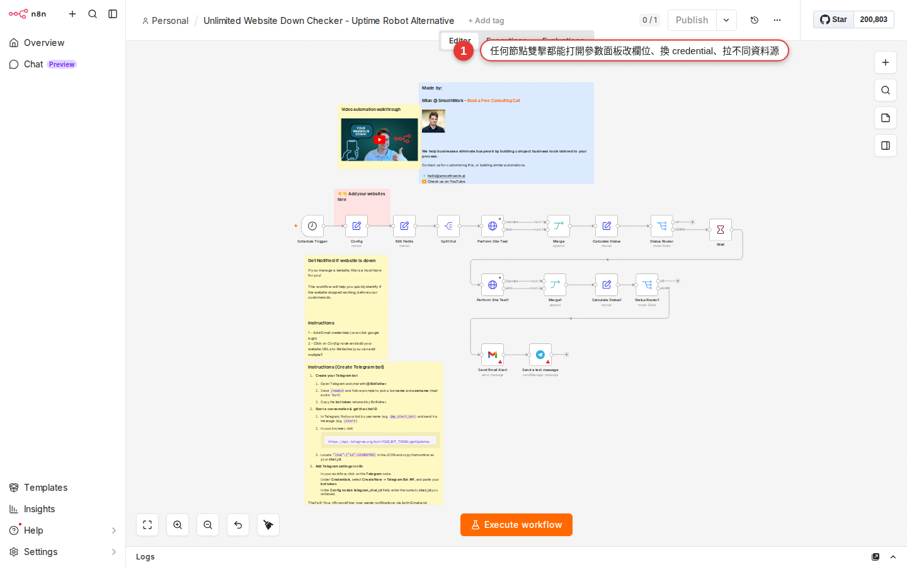

Change someone else's workflow: remap fields, swap the trigger, run it
You found a template in Chapter 4 and pasted the JSON in Chapter 5 — and now someone else's workflow is lying on your canvas. This chapter turns it into yours: point Google Form at your own form, send the Slack notification to your own channel, move the trigger type from a schedule to a Webhook. Run it once by hand at the end, and when you see the green checks it is yours.
Why you have to edit it instead of just running it
Templates were built by someone else for their own situation. Once you paste one in, every node on the canvas points at someone else's things — their Google account, their Slack channel, their field names, the trigger time that suited them. Press Execute and it will fail, because you have no access to any of it.
So a template is not "run it as-is", it is "use it as a skeleton". The skeleton has already decided which nodes to use, how they are wired and how the data flows — your job is to swap the parameters on that skeleton for your own:
- Swap the Google Sheet ID for your own sheet;
- Change the Slack channel from
#example-channelto#my-team; - Replace their credentials with ones authorized under your own account;
- Move the trigger type from "every day at 8:00 am" to "run when someone submits the form".
This chapter walks the whole path once: change parameters, remap fields, add a branch, swap the trigger. It is a hands-on chapter, so follow along the whole way and it will click.
Editing a workflow happens at three levels
Not every change costs the same. Sort what you want to change into levels before you start, and you will not trip over anything.
| Level | What you are doing | Time it takes | Covered in this chapter |
|---|---|---|---|
| Level 1: change parameter values | Swap the Sheet ID, channel name, trigger time and credential inside a node — node types and connections stay exactly as they are. | 5 minutes | Yes (most of this chapter) |
| Level 2: add / remove nodes | Add an IF branch, wire in one more Gmail notification, delete the Airtable node you do not need. Connections have to be redrawn and you may need a new credential. | 30 minutes | Yes (one worked example later on) |
| Level 3: change the logic | Move the trigger type from a schedule to a Webhook, pull a whole stretch out into a sub-workflow, split it into two workflows that call each other. | A few hours | A short section here on swapping the trigger; the rest in Chapter 19 |
The sections below follow that order — Level 1 first, then Level 2, and for Level 3 only the most common case, swapping the trigger.
Level 1: change parameter values (using the form-to-Slack template)
Say you have just imported a workflow following Chapter 5, and it looks like this: Google Form Trigger → Slack — someone submits the form and a message lands in Slack. The original author used their Google account, their form and their #general channel. We are going to replace all of it with yours.
-
Open the workflow you imported
Go back to the Workflows list and click the one you just imported. The canvas opens and you see two nodes with a connection between them. The first node may have a small red dot in its top-left corner, meaning "this node is not configured yet" — that is what you are here to fix.

Figure 6-1Opening a ready-made workflow: the canvas is full of nodes someone else wired up, and your job is to swap the parameters inside them for your own. -
Click the first node, Google Form Trigger, and the Parameters panel opens on the right
Double-click the node (a single click also works) and a large panel opens: input data on the left, Parameters in the middle, output data on the right. The Parameters in the middle are what you edit. No credential is selected yet, so there is a line of red text reading "No credential selected".
-
Swap in your own Google account credential
Find the Credential to connect with dropdown. Opening it gives you two cases:
- If you have connected a Google account before (on another workflow, say), you will see your credential listed by name, for example
Google API - Elmo. Pick it. - If this is your first time, choose + Create new credential. That takes you to the OAuth consent screen, where you sign in to Google and let n8n read and write. Chapter 13 has the full flow.
Once the credential is chosen, the red text disappears and the fields below it (Form / Trigger On) light up so you can use them.
- If you have connected a Google account before (on another workflow, say), you will see your credential listed by name, for example
-
Pick your own Google Form
The Form field below lists every Google Form under your account. Find the one you want to watch and click it. Leave Trigger On next to it at its default,
Form Submitted(it fires whenever someone submits). -
Click the next node, Slack, and change its credential the same way
Same move on the Slack node — set Credential to connect with in the Parameters panel on the right to your own Slack workspace account. The first time, it sends you to slack.com to authorize. Come back once you have, and the fields below (Channel / Message) become selectable.
-
Change the channel
The Channel field takes two approaches:
From listpicks from a dropdown (recommended — n8n lists every channel you are in), orBy IDwhere you paste a channel ID. Replace the template's#generalor#example-channelwith the channel you want notified, for example#my-team. -
Press Save in the top-right corner
There is a Save button in the top-right of the canvas (or Ctrl+S / Cmd+S). Press it and the bright blue Save button turns grey (some versions also flash a green saved note beside the title) — losing the accent color is what tells you it saved. If you navigate away instead, n8n raises an "unsaved changes" confirmation box; just do not click the wrong button.
Level 1 continued: remap the fields (your first expression)
The Slack node usually has a Message field, and the template author wrote something like this:
新表單: {{ $json['field1'] }}Whatever sits inside the two curly braces {{ }} is an Expression — it gets replaced with data handed over by the previous node. $json means "the JSON of the current item", and ['field1'] reads the field called field1.
Here is the problem: the author's Google Form field is called field1, while yours may be called applicant_name. At run time n8n cannot find field1, and Slack posts an awkward "New form entry: undefined". You need the right field name in there.
-
First look at what the previous node outputs
Go back to the Google Form Trigger node and press Execute step underneath it (that runs this node on its own). It waits for you to submit that form once; when you do, one item of JSON appears in the Output panel on the right. Look at what the fields are actually called —
applicant_name,email,vip, for example. -
Go back to the Slack node and point the expression at the right field
Click the Slack node and find the Message field. Change
{{ $json['field1'] }}to{{ $json['applicant_name'] }}. -
Let the drag-and-drop hint do the work
A faster way: move the cursor to the left of the Message field and a small data tree appears (the Input panel on the left) listing every field from the previous node. Drag
applicant_namestraight into the Message field and n8n fills in{{ $json.applicant_name }}for you — no expression syntax to memorize. -
Write a message with several fields
A message can mix several expressions with ordinary text:
新表單來了 :bell: 姓名：{{ $json.applicant_name }} Email：{{ $json.email }} 是否 VIP：{{ $json.vip }}Write plain text directly, and wrap anything that pulls data in
{{ }}. -
Press Execute step to preview it
The Slack node can be run on its own too (Execute step) — it takes that Google Form test item as its input and really does post a message to your Slack channel. It has worked when you open Slack and see the message.
{{ $json.欄位名 }} reads a field on the current item, and the drag-and-drop hint lets n8n write it for you.Level 2: add a node (a VIP branch)
Your form notification runs now. But your boss has one more requirement: "when a VIP customer submits the form, email the sales manager as well as posting to Slack". That needs one more node and a branch.
The flow you are aiming for:
Google Form Trigger
↓
IF (vip == true?)
├─ true → Gmail (寄給經理) → Slack (通知團隊)
└─ false → Slack (通知團隊)-
Insert an IF node between the Google Form node and the Slack node
Move the cursor onto the connection between Google Form → Slack and a + button appears. Click it, search the nodes panel for "IF" and pick IF (under the Flow category). n8n drops the IF node into the middle of the connection: the Google Form output feeds IF, and one of IF's outputs feeds Slack.
-
Set up the IF condition
Click the IF node and the Parameters panel shows Conditions. Add one condition:
- Left side: drag the
vipfield over from the Input panel on the left (or type{{ $json.vip }}yourself) - Middle: choose
is equal to - Right side: enter
true(if the vip field is a boolean) or是/Y(if it is text)
Once that is saved, the IF node has two output dots — true on top, false below.
- Left side: drag the
-
Wire a Gmail node onto the true branch
Draw a connection out of IF's true output; the nodes panel opens at the far end. Search for "Gmail" and choose Send a message. Set the credential, put the sales manager's email in the recipient field, use a Subject such as
VIP 客戶: {{ $json.applicant_name }}, and write whatever you want in the Body. -
Wire the original Slack node after the Gmail node
Draw a connection from the Gmail output to the existing Slack node — that way the VIP branch sends the email first and then posts to Slack.
Draw a connection from IF's false output to the same Slack node as well — non-VIP submissions only go to Slack. Two connections can land on one node, and n8n runs them in order. -
Execute manually and test both branches
Press Execute step on the Google Form Trigger node and submit one piece of fake data with vip=true — you should see the IF node's true branch turn green, Gmail send the mail and Slack post the message. Test again with vip=false — only Slack turns green. You are done when both sides run correctly.
-
Press Save, and do not forget it
Adding a node needs a Save just as changing a parameter does. It is saved when the Save button in the top right has turned grey and navigating away no longer raises "Unsaved changes".
Level 3 warm-up: change the trigger
The trigger type a template uses will not always suit you. A common case: the template runs on a Schedule Trigger every day at 8:00 am, but you want it to run only when someone presses a button in your front end — for that you need a Webhook Trigger.
-
Delete the existing Schedule Trigger node
Click the Schedule Trigger node once and press Delete (or right-click and choose Delete). The node disappears, and the connection into it breaks with it. You will restore that in a moment.
-
Add a Webhook Trigger from the nodes panel
Press the + in the top-left of the canvas (or hit Tab) to open the nodes panel, find Webhook under Trigger, the top category, and drag it onto the spot where Schedule used to sit.
-
Connect the Webhook output to the downstream node
Draw a connection from the connector dot on the right of the Webhook node to the connector dot on the left of the next node (the one Schedule used to trigger). Once it is connected, the downstream node lights up to say it has an input again.
-
Get the Webhook's Test URL
Click the Webhook node and the Parameters panel shows two URLs: Test URL (the temporary one, for when you press Execute step inside n8n) and Production URL (the permanent one, live once the workflow is set to Active). Copy the Test URL and hand it to your front-end engineer, or call it with
curlto try it.
After swapping the trigger type, go back and Execute the whole workflow manually once to confirm nothing is broken. The next section covers the three checks to run after every edit.
Three checks to run after every edit
After you save the change and before you switch the workflow to Active, do these three things. Skipping them is how you plant a problem for later.
-
Press Save and confirm the Save button turns grey
Press Save and the blue Save button in the top right turns grey and loses its accent color — that means there are no unsaved changes. If the button is still bright blue, or n8n raises an "Unsaved changes" dialog when you try to navigate away, it did not save. The usual reason is that you were typing in a node field and have not clicked into empty space to commit the value. Click an empty part of the canvas, then press Save.
-
Press Execute Workflow and run the whole thing once by hand
There is a large Execute Workflow button at the bottom-center of the canvas. Press it and n8n runs the workflow from the top (the trigger either uses fake trigger data or asks you to fire it live). Watch whether every node gets a green border, and whether any node turns red.
-
Open the Executions page and confirm every node has a green check
The sidebar has Executions (the execution history). The run you just did appears at the top. Click into it for the detail — every node should carry a green ✓ icon. Opening a node with a red ✗ shows you the error message.
Only when all three pass should you flip the Active toggle in the top right and take the workflow live. Once Active is on, a Schedule Trigger runs on its schedule and a Webhook Trigger accepts outside calls.
Common ways people break a workflow
If something feels wrong mid-edit, check this table first — it is usually one of these.
| What you see | Cause in plain words | How to fix it |
|---|---|---|
| A small red dot in the node's top-left corner | That node still has a required field empty, or no credential selected. | Click the node, look at the Parameters panel, and fill in the fields marked in red. |
| The node has a red border (after a run) | It errored at run time — the API call failed, the expression could not find the field, or the credential expired. | Open the Executions page, click that node and read the error message; usually a field name is wrong or the credential needs re-authorizing. |
| No connection between two nodes | You knocked the connection loose while dragging a node, or deleting the old node broke it and it was never redrawn. | Draw a connection from the connector dot on the right of the upstream node to the connector dot on the left of the downstream node. |
| Execute Workflow does nothing | The wrong trigger type — a Schedule Trigger, for instance, only runs when its time comes, so a manual poke does not fire it right away. | Swap in a Manual Trigger node for testing, or press Execute step on the trigger node instead of running the whole workflow. |
| The Slack message comes out as "undefined" | The field name in the expression is wrong, so n8n cannot find that key. | Look at the previous node's Output panel for the real field name, and correct the field in the expression. |
| You pressed Save, but reopening shows the old version | The Save button never actually turned grey — most likely an uncommitted edit still sitting in a field, or you navigated away before clicking into empty space. | Click empty space so the field loses focus, press Save, confirm the button turns grey, and only then navigate away. |
| The IF branch always goes to false | The condition's data types do not match — you compare vip == true, say, while the real data is the string "true". |
Make the right-hand value the string true as well, or pick the right comparator between is equal to (string) and is equal to (boolean). |
Getting unstuck
-
"I deleted a node by accident"
Press Ctrl+Z (Cmd+Z on a Mac) to undo — the n8n canvas supports undo/redo, as long as you have not refreshed the page (a refresh clears the undo stack). If you already pressed Save and reloaded, and undo cannot get you back, you need the Workflow History covered below: from the workflow list open the workflow → ⋮ in the top right → Workflow history (on by default in the self-hosted edition; on Cloud the retention days depend on the plan). From there you can see past versions and restore one.
-
"I pressed Save but reopening shows nothing was saved"
A Save only counts once the button turns grey — if it is still bright blue, there is an uncommitted field edit. Click an empty part of the canvas first to move the cursor out of the field, then press Save, or use the Ctrl+S (Cmd+S on a Mac) shortcut.
-
"I want two versions of one template so I can test both"
Go back to the Workflows list, find the workflow, and choose Duplicate from the ⋮ (three-dot menu) on the right. That gives you an identical workflow with "copy" appended to the name. Edit the copy however you like and keep the original as your backup.
-
"The Executions panel is all red and I do not know which one to fix first"
Every row on the Executions page shows which node failed. Start at the top (the most recent failure), click in, read the error message, fix that node's fields, then press Execute Workflow to retry. Fixing one often clears the next by itself. Do not change five things at once — change one, run once, look at the result.
-
"I want to compare before and after"
n8n has no visual diff tool on the canvas. Workflow History (the self-hosted Community edition has it too, with the environment variable
N8N_WORKFLOW_HISTORY_PRUNE_TIMEcontrolling retention; Cloud gives 5 to unlimited days depending on the plan) lets you view two versions side by side and restore one, but it shows which node was changed rather than a word-by-word diff. For a line-by-line comparison, the practical route is to export the workflow as JSON (⋮ → Download), save it, and compare the two JSON files in VS Code. Enterprise Source Control binds the whole instance to Git for pull-request-level review; it is not a diff button for a single workflow. -
"The Webhook URL stopped working after my edit"
A Webhook has two URLs, Test and Production. The Test URL is only live while you are in the n8n editor with Execute step / Listen for test event running, and it expires. The Production URL only works once the workflow is switched to Active. Mixing the two up is the most common trap when debugging a Webhook; Chapter 22 has the detail.
FAQ
I have made a mess of it — can I get back to the original template?
Two approaches:
- Prevention: before you edit, Duplicate the original as a backup and work on the copy. If you make a mess, delete the copy and Duplicate the original again to start over. This is the approach we recommend.
- Recovery: go back to the Templates gallery from Chapter 4 or n8n.io/workflows from Chapter 5 and import the original template again over the top. You lose your edits, but at least you are back at the starting point.
Does Save keep a version history? Can I look at yesterday's version?
Yes — n8n has Workflow History built in, and the self-hosted Community edition has it as well (it is not Enterprise-only). You find it at ⋮ → Workflow history in the top right of the workflow editor. It lists a snapshot for every Save, and you can preview one, restore it, or clone it into a new workflow.
- Self-hosted Community: unlimited snapshots by default; the environment variable
N8N_WORKFLOW_HISTORY_PRUNE_TIME(in hours) controls the pruning cycle. - n8n Cloud: Starter usually has none, Pro gives 5 days and Enterprise longer — it varies by plan, so the pricing page is the authority.
- Enterprise extra: Source Control binds the whole instance to Git, giving you branch- and PR-level version control rather than the history of one workflow.
- The most dependable personal backup: after editing an important workflow, use ⋮ → Download and keep a JSON copy in your own Git.
If several of us edit the same workflow, do we clash?
Yes. n8n has no real-time multi-user collaboration today (unlike Google Docs) — two people open the same workflow, each edits their own copy, and whoever saves last overwrites whoever saved first. In practice:
- For a workflow the team shares, agree that only one person edits it at a time, and say so in Slack: "I'm editing the XX workflow".
- The sturdier approach is for everyone to develop in their own Personal folder and Duplicate into the Team workspace once it tests clean.
I am halfway through an edit and want to keep it offline for now. How?
Turn off the Active toggle in the top right of the canvas — the workflow will not be fired by a schedule or a Webhook, and only runs when you press Execute Workflow yourself. This is n8n's long-standing Inactive state, which works like a draft, though there is no button in the interface called Draft mode (some newer plans have been adding a separate draft/publish flow, but the UI labels are still Active/Inactive). Take as long over the edit as you like; it only goes live when you press Active.
Do I have to re-authorize the credential after changing a parameter?
It depends what you changed:
- A new Sheet ID, a new channel, an edited expression → no re-authorization; the same credential is fine.
- A different Google account or a different Slack workspace → you need a new credential; add it on the Credentials page.
- An expired credential (an OAuth token that has stopped working, say) → open the Credentials page, click that credential and press Reconnect to authorize again.
Once I have edited a template, can I share it as my own contribution?
You can, but it depends how much you changed. Swapping parameters alone (credential, channel, Sheet ID) counts as using a template, not as original work. Adding a new branch, changing the trigger or customizing with a Code node does count as your own contribution. When you share it, note in the description that it is adapted from someone else's template — that is the convention in the n8n community.
What comes next?
You can now take what someone else built and make it your own — the most useful entry-level skill in n8n. Next, Chapter 7 teaches you to read the n8n nodes panel: those hundreds of nodes really fall into three families (Trigger / Action / Core), and once you know the families you find a node quickly. After that, Chapter 8 builds a workflow of your own from a blank canvas, with no one else's skeleton underneath.